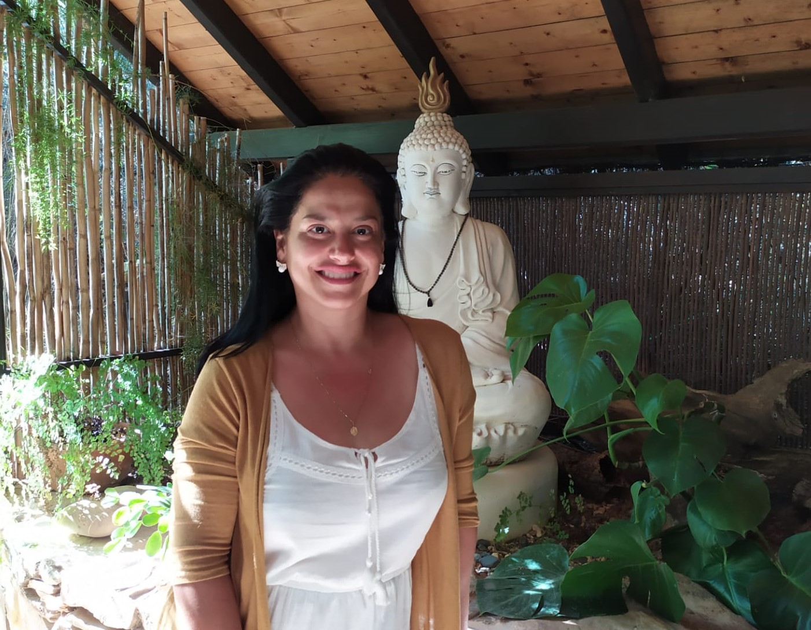

O fazer Terapia!
A psicanálise é um método terapêutico desenvolvido pelo médico austríaco Sigmund Freud, no final do século
XIX. Sua teoria psicanalítica sistematizou os conhecimentos sobre a psique humana. Ela é uma das
abordagens da psicoterapia.
O objeto de estudo da psicanálise é o inconsciente. Freud acreditava que ao tomar consciência dos pensamentos subconscientes, o paciente podia liberar traumas, emoções e experiências reprimidas e, por meio do autoconhecimento, aprender a lidar melhor com si e com os outros e se curar de transtornos mentais, neuroses e psicoses.Com suas investigações sobre a psique humana, Freud entendeu que os processos mentais inconscientes eram a fonte para os distúrbios psíquicos. Ele desenvolveu teorias sobre o inconsciente, os estágios psicossexuais, o simbolismo dos sonhos, entre outras.
A psicanálise busca interpretar o significado inconsciente de sonhos, pensamentos, palavras e ações. Para isso, um dos métodos dessa terapia é a livre associação, no qual o paciente fala o que lhe vem à mente com a menor racionalização possível, trazendo os pensamentos e memórias inconscientes à tona.
A terapia utilizando a psicanálise pode ser utilizada para resolver traumas da infância, depressão, transtornos de ansiedade, problemas sexuais, entre outros. Além de aumentar o autoconhecimento e melhorar o controle emocional. Os atendimentos acontecem em um ambiente reservado ou on-line para que o paciente se sinta seguro em compartilhar seus sentimentos e pensamentos de forma aberta e clara ao psicanalista.
As sessões costumam durar de 50 minutos a uma hora e, em geral, o tratamento requer vários encontros para um processo de evolução de acordo com a individualidade e disposição do paciente.
Leia mais →
O objeto de estudo da psicanálise é o inconsciente. Freud acreditava que ao tomar consciência dos pensamentos subconscientes, o paciente podia liberar traumas, emoções e experiências reprimidas e, por meio do autoconhecimento, aprender a lidar melhor com si e com os outros e se curar de transtornos mentais, neuroses e psicoses.Com suas investigações sobre a psique humana, Freud entendeu que os processos mentais inconscientes eram a fonte para os distúrbios psíquicos. Ele desenvolveu teorias sobre o inconsciente, os estágios psicossexuais, o simbolismo dos sonhos, entre outras.
A psicanálise busca interpretar o significado inconsciente de sonhos, pensamentos, palavras e ações. Para isso, um dos métodos dessa terapia é a livre associação, no qual o paciente fala o que lhe vem à mente com a menor racionalização possível, trazendo os pensamentos e memórias inconscientes à tona.
A terapia utilizando a psicanálise pode ser utilizada para resolver traumas da infância, depressão, transtornos de ansiedade, problemas sexuais, entre outros. Além de aumentar o autoconhecimento e melhorar o controle emocional. Os atendimentos acontecem em um ambiente reservado ou on-line para que o paciente se sinta seguro em compartilhar seus sentimentos e pensamentos de forma aberta e clara ao psicanalista.
As sessões costumam durar de 50 minutos a uma hora e, em geral, o tratamento requer vários encontros para um processo de evolução de acordo com a individualidade e disposição do paciente.

Qual a diferença entre o psicólogo, o psicanalista e o psiquiatra?
O psicólogo é o profissional formado em Psicologia e que está apto a atuar de forma clínica, social,
profissional ou escolar. No atendimento clínico, ou seja, nas sessões de terapia, o psicólogo pode
utilizar diversas abordagens da Psicologia, incluindo a psicanálise.
O psicanalista é o profissional que pode ser formado em outras áreas do ensino superior, além da Psicologia, e que se especializa em psicanálise, aplicando ela em todas as situações em que irá atuar.
O psiquiatra é um profissional que realizou faculdade de medicina e fez a sua especialização ou residência em Psiquiatria, a área que é capaz de diagnosticar e tratar doenças mentais. O psiquiatra, diferente do psicólogo e do psicanalista, pode receitar remédios.
Entretanto, essas três profissões não são excludentes e podem trabalhar de forma conjunta no acompanhamento de um paciente. O psiquiatra pode recomendar um tratamento que inclua sessões de terapia e, se entender que faz sentido para a realidade em questão, direcionado para a psicanálise.
Leia mais →
O psicanalista é o profissional que pode ser formado em outras áreas do ensino superior, além da Psicologia, e que se especializa em psicanálise, aplicando ela em todas as situações em que irá atuar.
O psiquiatra é um profissional que realizou faculdade de medicina e fez a sua especialização ou residência em Psiquiatria, a área que é capaz de diagnosticar e tratar doenças mentais. O psiquiatra, diferente do psicólogo e do psicanalista, pode receitar remédios.
Entretanto, essas três profissões não são excludentes e podem trabalhar de forma conjunta no acompanhamento de um paciente. O psiquiatra pode recomendar um tratamento que inclua sessões de terapia e, se entender que faz sentido para a realidade em questão, direcionado para a psicanálise.
O pensamento Yogue à luz de Freud!
Sob a luz das diferentes escolas de ioga,o Tantra sistematizou asanas e pranayamas, o Sanquia deu origem ao Ashtanaga Yoga de Patanjali e o Advaita Vedanta empresta seu corpo doutrinário a inúmeros mestres contemporâneos.
O Ocidente enfatizou o aspecto psicofísico da ioga, e se o mundo ocidental conseguiu mimetizar o Hatha
ioga em seu aspecto orgânico com relativa eficiência, o mesmo não se pode dizer sobre o entendimento da
diversidade metafísica de suas vertentes. Esta dificuldade, em parte, decorre da ausência de uma
correspondência imediata de suas ideias com a filosofia que nos é mais familiar; as particularidades do
pensamento oriental dificilmente têm paralelos com a matriz filosófica de nossa cultura. Mas os entraves a
esta compreensão são também de outra natureza.
A língua sânscrita tem enorme plasticidade para elaborar conceitos que podem ser explicitados por um exercício etimológico, mas gera o desafio de depender de um contexto para revelar o sentido adequado do termo.
A palavra samskara do Yoga Sutra de Patanjali é um exemplo desta complexidade: o termo samskara origina-se etimologicamente de samksr – aprontar; moldar para uso de alguém; mudar; transformar. É o ato de aprimorar, de levar à perfeição. Vem da raiz que kŗ, que significa “fazer”, como as palavras karma, kriya, e prakriti (matéria em seu estado bruto, virgem, precedendo a transformação). De forma coloquial, samskara significa purificação (rituais de passagem no hinduísmo), preparar, cozinhar, polir uma pedra preciosa.
Em geral quer dizer aquilo que foi cultivado, trazido à forma. O prâcrito (de prakriti) idioma popular, é uma linguagem em estado bruto que precede seu aprimoramento, enquanto o sânscrito (de samskr) é a língua já aperfeiçoada. Na metafísica do Sanquia o sentido de impressão, influência, operação, forma e molde é que vai dar origem ao conceito de samskara empregado por Patanjali nos Yoga sutras. O samskara do Sanquia é aquela ação continuada que imprime, molda e dá forma a algum aspecto de nosso psiquismo e influencia nossa maneira de agir e reagir (karmas).
E ainda resta a apropriação do termo pelas diferentes escolas filosóficas. A noção de gunas adotada pelo Sanquia, como os três componentes constitutivos de uma vivência (percepção, dinâmica e assimilação), é entendida pela doutrina Vaisheshika Nyaya como atributos ou qualidades da matéria. O manas do Sanquia é o filtro emocional que damos às sensações, enquanto no Advaita Vedanta é tido como registro ou memória.
A tarefa de interpretar e entender um conceito oriental requer o cuidado de identificar não só o contexto de seu uso, bem como a escola de pensamento com a qual estamos lidando. Mas persiste o problema da transcrição para um sistema de ideias que nos seja mais habitual.
Alguns pensadores ocidentais, como Schopenhauer e Leibnitz, por exemplo, assumem o influxo de ideias do Oriente em suas doutrinas e, de alguma maneira, auxiliam a entender os conceitos emprestados da Ásia.
Entre os fundadores da Psicologia, Jung é explicitamente um seguidor de doutrinas asiáticas, e seu envolvimento com este universo mítico e místico foi uma das fontes de conflito com Freud. Curiosamente, em uma de suas últimas obras, “O mal estar na cultura” (1930), ao tentar transladar o aspecto psicológico dos fenômenos metafísicos, este faz uma abordagem rica e completa de conceitos que fundamentam o pensamento oriental.
“O mal estar da Cultura”, também conhecido como “O mal estar na civilização”, é uma obra escrita em 1929, onde Freud, já aos 73 de idade e convalescendo de uma enfermidade prolongada, assistia a emergência dos conflitos que iriam desencadear o segundo grande conflito mundial. Neste momento em que retoma sua teoria do impulso de morte/destruição, Freud reconsidera a supremacia que atribuía a ciência (ou razão) em relação a religião (fé) na sua capacidade de trazer uma vida mais profícua ao ser humano. A polarização de lógicas politicas autoritárias, particularmente a nazista, aliada a sua própria vulnerabilidade orgânica, reorientam o pensador para as questões metafísicas.
“É impossível fugir à impressão de que as pessoas comumente empregam falsos padrões de avaliação – isto é, de que buscam poder, sucesso e riqueza para elas mesmas e os admiram nos outros, subestimando tudo aquilo que verdadeiramente tem valor na vida. No entanto, ao formular qualquer juízo geral desse tipo, corremos o risco de esquecer quão variados são o mundo humano e sua vida mental.”, afirma Freud, na abertura do livro.
O psicanalista revela que o livro fora deflagrado pela carta recebida de Romain Rolland em resposta à uma brochura de sua autoria, que tratava a religião como ilusão.
“Enviei-lhe o meu pequeno livro que trata a religião como sendo uma ilusão, e ele me respondeu que concordava inteiramente com esse meu juízo, lamentando, porém, que eu não tivesse apreciado corretamente a verdadeira fonte da religiosidade. Esta, diz ele, consiste num sentimento peculiar, que ele mesmo jamais deixou de ter presente em si, que encontra confirmado por muitos outros e que pode imaginar atuante em milhões de pessoas. Trata-se de um sentimento que ele gostaria de designar como uma sensação de ‘eternidade’, um sentimento de algo ilimitado, sem fronteiras — ‘oceânico’, por assim dizer. Esse sentimento, acrescenta, configura um fato puramente subjetivo, e não um artigo de fé; não traz consigo qualquer garantia de imortalidade pessoal, mas constitui a fonte da energia religiosa de que se apoderam as diversas Igrejas e sistemas religiosos, é por eles veiculado para canais específicos e, indubitavelmente, também por eles exaurido. Acredita ele que uma pessoa, embora rejeite toda crença e toda ilusão, pode corretamente chamar-se a si mesma de religiosa com fundamento apenas nesse sentimento oceânico.”
Freud admite que não consegue compartilhar este sentimento de epifania, ou como ele definiu, um sentimento de união indissolúvel, de pertencimento ao todo do mundo exterior.
“As opiniões expressas por esse amigo que tanto respeito, e que outrora já louvara a magia da ilusão num poema, causaram-me não pequena dificuldade. Não consigo descobrir em mim esse sentimento ‘oceânico’. Não é fácil lidar cientificamente com sentimentos. Pode-se tentar descrever os seus sinais fisiológicos. Onde isso não é possível — e temo que também o sentimento oceânico desafie esse tipo de caracterização —, nada resta senão cair no conteúdo ideacional que, de forma mais imediata, está associado ao sentimento.”
Neste pequeno ensaio, ele compartilha com os pensadores orientais o pessimismo sobre a vida humana, em constante conflito com as forças da natureza e em contradições culturais com seus impulsos interiores. No segundo capítulo, ao discorrer sobre a finalidade da vida humana, o pai da psicanálise aborda o tema do desejo/prazer, consoante ao adágio de Buda: “A raiz do sofrimento é o apego”.
“Como vemos, o que decide o propósito da vida é simplesmente o programa do princípio do prazer. Esse princípio domina o funcionamento do aparelho psíquico desde o início. Não pode haver dúvida sobre sua eficácia, ainda que o seu programa se encontre em desacordo com o mundo inteiro, tanto com o macrocosmo quanto com o microcosmo. Não há possibilidade alguma de ele ser executado; todas as normas do universo são-lhe contrárias. Ficamos inclinados a dizer que a intenção de que o homem seja ‘feliz’ não se acha incluída no plano da ‘Criação’. O que chamamos de felicidade no sentido mais restrito provém da satisfação (de preferência, repentina) de necessidades represadas em alto grau, sendo, por sua natureza, possível apenas como uma manifestação episódica. Quando qualquer situação desejada pelo princípio do prazer se prolonga, ela produz tão-somente um sentimento de contentamento muito tênue. Somos feitos de modo a só podermos derivar prazer intenso de um contraste, e muito pouco de um determinado estado de coisas. Assim, nossas possibilidades de felicidade sempre são restringidas por nossa própria constituição. Já a infelicidade é muito menos difícil de experimentar.”
O psicanalista vê uma origem tríplice do sofrimento:
“O sofrer nos ameaça a partir de três lados: do próprio corpo, que, fadado ao declínio e à dissolução, não pode sequer dispensar a dor e o medo, como sinais de advertência; do mundo externo, que pode se abater sobre nós com forças poderosíssimas, inexoráveis, destruidoras; e, por fim, das relações com os outros seres humanos”.
Esta passagem nos remete a abertura do “Sanquia Karika”, atribuído a Ishawarakrishna: “Do choque da tripla miséria vem o desejo de conhecer os meios de prevenção; esta investigação não é supérflua devido aos medicamentos visíveis, porquê estes não podem assegurar alivio certo e permanente.”
O conceito da tripla miséria do sábio indiano, isto é, a dor ādhyātmika (causada por elementos psico físicos: febre, medo, ganância, raiva), a dor ādhibhautika (causada por agentes externos: outros homens, animais, forças naturais), e a dor ādhidaivika (de origem supernatural: fantasmas, demônios etc.), guarda certa semelhança ao pensamento freudiano (com a clara exceção às entidades supernaturais). Curiosamente, Freud se refere ao ioga como uma técnica oriental de prevenção ao sofrimento:
“Do mesmo modo que a satisfação de instintos é felicidade, torna-se causa de muito sofrer se o mundo exterior nos deixa à míngua, recusando-se a nos saciar as carências. Então é possível esperar que, agindo sobre esses impulsos instintivos, fiquemos livres de uma parte do sofrer. Esse tipo de defesa contra o sofrimento já não lida com o aparelho sensorial; busca dominar as fontes internas das necessidades. De modo extremo isso ocorre ao se liquidar os instintos, como prega a sabedoria do Oriente e como praticam os iogues.”
O conceito freudiano do ego é muito semelhante ao eu empírico/transitório, denominado Ahamkara na filosofia Sanquia . O eu empírico/transitório se desenvolve ao se relativizar, em função dos estímulos que recebe, criando uma identidade autônoma e condicionada, e assim desvencilha-se gradativamente do mundo exterior. Este mundo exterior, por sua vez, ou oceânico, nas palavras de Freud, lembra o conceito do absoluto, denominado Atman ou Brahman no Advaita Vedanta.
“Normalmente, não há nada de que possamos estar mais certos do que do sentimento de nosso eu, do nosso próprio ego. O ego nos aparece como algo autônomo e unitário, distintamente demarcado de tudo o mais. Ser essa aparência enganadora – apesar de que, pelo contrário, o ego seja continuado para dentro, sem qualquer delimitação nítida, por uma entidade mental inconsciente que designamos como id, à qual o ego serve como uma espécie de fachada –, configurou uma descoberta efetuada pela primeira vez através da pesquisa psicanalítica, que, de resto, ainda deve ter muito mais a nos dizer sobre o relacionamento do ego com o id. No sentido do exterior, porém, o ego de qualquer modo, parece manter linhas de demarcação bem e claras e nítidas. Há somente um estado – indiscutivelmente fora o comum, embora não possa estigmatizado como patológico – em que ele não se apresenta assim. No auge do sentimento de amor, a fronteira entre ego e objeto ameaça desaparecer. Uma reflexão mais apurada nos diz que o sentimento do ego do adulto não pode ter sido o mesmo desde o início. Deve ter passado por um processo de desenvolvimento, que, se não pode ser demonstrado, pode ser construído com um razoável grau de probabilidade.
Uma criança recém-nascida ainda não distingue o seu ego do mundo externo como fonte das sensações que fluem sobre ela. Aprende gradativamente a fazê-lo, reagindo a diversos estímulos. Ela deve ficar fortemente impressionada pelo fato de certas fontes de excitação, que posteriormente identificará como sendo os seus próprios órgãos corporais, poderem provê-la de sensações a qualquer momento, ao passo que, de tempos em tempos, outras fontes lhe fogem – entre as quais se destaca a mais desejada de todas, o seio da mãe –, só reaparecendo como resultado de seus gritos de socorro. Desse modo, pela primeira vez, o ego é contrastado por um ‘objeto’, sob a forma de algo que existe ‘exteriormente’ e que só é forçado a surgir através de uma ação especial. Um outro incentivo para o desengajamento do ego com relação à massa geral de sensações – isto é, para o reconhecimento de um ‘exterior’, de um mundo externo – é proporcionado pelas freqüentes, múltiplas e inevitáveis sensações de sofrimento e desprazer, cujo afastamento e cuja fuga são impostos pelo princípio do prazer, no exercício de seu irrestrito domínio. Surge, então, uma tendência a isolar do ego tudo que pode tornar-se fonte de tal desprazer, a lançá-lo para fora e a criar um puro ego em busca de prazer, que sofre o confronto de um ‘exterior’ estranho e ameaçador.
As fronteiras desse primitivo ego em busca de prazer não podem fugir a uma retificação através da experiência. Entretanto, algumas das coisas difíceis de serem abandonadas, por proporcionarem prazer, são, não ego, mas objeto, e certos sofrimentos que se procura extirpar mostram-se inseparáveis do ego, por causa de sua origem interna. Assim, acaba-se por aprender um processo através do qual, por meio de uma direção deliberada das próprias atividades sensórias e de uma ação muscular apropriada, se pode diferenciar entre o que é interno – ou seja, que pertence ao ego – e o que é externo – ou seja, que emana do mundo externo.
Desse modo, dá-se o primeiro passo no sentido da introdução do princípio da realidade, que deve dominar o desenvolvimento futuro... Desse modo, então, o ego se separa do mundo externo. Ou, numa expressão mais correta, originalmente o ego inclui tudo; posteriormente, separa, de si mesmo, um mundo externo. Nosso presente sentimento do ego não passa, portanto, de apenas um mirrado resíduo de um sentimento muito mais inclusivo – na verdade, totalmente abrangente –, que corresponde a um vínculo mais íntimo entre o ego e o mundo que o cerca.”
O pai da psicanálise passa então a definir, de modo mais claro, a sensação do absoluto (Atman/Brahman), da ausência de limites, da demarcação entre o mundo individual e o mundo exterior que é vivenciada por inúmeros místicos.
“Supondo que há muitas pessoas em cuja vida mental esse sentimento primário do ego persistiu em maior ou menor grau, ele existiria nelas ao lado do sentimento do ego mais estrito e mais nitidamente demarcado da maturidade, como uma espécie de correspondente seu. Nesse caso, o conteúdo ideacional a ele apropriado seria exatamente o de ilimitabilidade e o de um vínculo com o universo – as mesmas ideias que elucidou o sentimento ‘oceânico’. Contudo, terei eu o direito de presumir a sobrevivência de algo que já se encontrava originalmente lá, lado a lado com o que posteriormente dele se derivou? Sem dúvida, sim. Nada existe de estranho em tal fenômeno, tanto no campo mental como em qualquer outro.
Freud faz uma analogia sobre a falta de limites entre tempo e espaço usando a cidade de Roma como modelo. Em sua visão, a cidade é envolta em camadas que, ao serem seccionadas, nos levam a vivenciar sua história pregressa. A experiência à qual que ele se refere lembra o conceito de kala-vancana, uma possibilidade de escapar da ilusão espaço/tempo, que seriam projeções mentais de nossas memórias encobertas. Este conceito aparece nos Vedas e nos Tantras, e significa, literalmente, ludibriar ou distorcer o tempo.
“Escolheremos como exemplo a história da Cidade Eterna. Os historiadores nos dizem que a Roma mais antiga foi a Roma Quadrata, uma povoação sediada sobre o Palatino. Seguiu-se a fase dos Septimontium, uma federação das povoações das diferentes colinas; depois, veio a cidade limitada pelo Muro de Sérvio e, mais tarde ainda, após todas as transformações ocorridas durante os períodos da república e dos primeiros césares, a cidade que o imperador Aureliano cercou com as suas muralhas. Não acompanharemos mais as modificações por que a cidade passou; perguntar-nos-emos, porém, o quanto um visitante, que imaginaremos munido do mais completo conhecimento histórico e topográfico, ainda pode encontrar, na Roma de hoje, de tudo que restou dessas primeiras etapas. À exceção de umas poucas brechas, verá o Muro de Aureliano quase intacto. Em certas partes, poderá encontrar seções do Muro de Sérvio que foram escavadas e trazidas à luz. Se souber bastante – mais do que a arqueologia atual conhece –, talvez possa traçar na planta da cidade todo o perímetro desse muro e o contorno da Roma Quadrata. Dos prédios que outrora ocuparam essa antiga área, nada encontrará, ou, quando muito, restos escassos, já que não existem mais. No máximo, as melhores informações sobre a Roma da era republicana capacitariam-no apenas a indicar os locais em que os templos e edifícios públicos daquele período se erguiam. Seu sítio acha-se hoje tomado por ruínas, não pelas ruínas deles próprios, mas pelas de restaurações posteriores, efetuadas após incêndios ou outros tipos de destruição. Também faz-se necessário observar que todos esses remanescentes da Roma antiga estão mesclados com a confusão de uma grande metrópole, que se desenvolveu muito nos últimos séculos, a partir da Renascença. Sem dúvida, já não há nada que seja antigo, enterrado no solo da cidade ou sob os edifícios modernos. Este é o modo como se preserva o passado em sítios históricos como Roma.
Permitam-nos agora, num vôo da imaginação, supor que Roma não é uma habitação humana, mas uma entidade psíquica, com um passado semelhantemente longo e abundante – isto é, uma entidade onde nada do que outrora surgiu desapareceu e onde todas as fases anteriores de desenvolvimento continuam a existir, paralelamente à última.
Isso significaria que, em Roma, os palácios dos césares e as Septizonium de Sétimo Severo ainda se estariam erguendo em sua antiga altura sobre o Palatino e que o castelo de Santo Ângelo ainda apresentaria em suas ameias as belas estátuas que o adornavam até a época do cerco pelos godos, e assim por diante. Mais do que isso: no local ocupado pelo Palazzo Cafarelli, mais uma vez se ergueria – sem que o Palazzo tivesse de ser removido – o Templo de Júpiter Capitolino, não apenas em sua última forma, como os romanos do Império o viam, mas também na primitiva, quando apresentava formas etruscas e era ornamentado por antefixas de terracota.
Ao mesmo tempo, onde hoje se ergue o Coliseu, poderíamos admirar a desaparecida Casa Dourada, de Nero. Na Praça do Panteão encontraríamos não apenas o atual, tal como legado por Adriano, mas, aí mesmo, o edifício original levantado por Agripa; na verdade, o mesmo trecho de terreno estaria sustentando a Igreja de Santa Maria sobre Minerva e o antigo templo sobre o qual ela foi construída. E talvez o observador tivesse apenas de mudar a direção do olhar ou a sua posição para invocar uma visão ou a outra.
A essa altura não faz sentido prolongarmos nossa fantasia, de uma vez que ela conduz a coisas inimagináveis e mesmo absurdas. Se quisermos representar a seqüência histórica em termos espaciais, só conseguiremos fazê-lo pela justaposição no espaço: o mesmo espaço não pode ter dois conteúdos diferentes. Nossa tentativa parece ser um jogo ocioso. Ela conta com apenas uma justificativa. Mostra quão longe estamos de dominar as características da vida mental através de sua representação em termos pictóricos. Há outra objeção a ser considerada. Pode-se levantar a questão da razão por que escolhemos precisamente o passado de uma cidade para compará-lo com o passado da mente.
A suposição de que tudo o que passou é preservado se aplica, mesmo na vida mental, só com a condição de que o órgão da mente tenha permanecido intacto e que seus tecidos não tenham sido danificados por trauma ou inflamação. Mas influências destrutivas que possam ser comparadas a causas de enfermidade como as citadas acima nunca faltam na história de uma cidade, ainda que tenha tido um passado menos diversificado que o de Roma, e ainda que, como Londres, mal tenha sofrido com as visitas de um inimigo.
Demolições e substituições de prédios ocorrem no decorrer do mais pacífico desenvolvimento de uma cidade. Uma cidade é, portanto, a priori, inapropriada para uma comparação desse tipo com um organismo mental.
Curvamo-nos ante essa objeção e, abandonando nossa tentativa de esboçar um contraste impressivo, nos voltaremos para o que, afinal de contas, constitui um objeto de comparação mais estreitamente relacionado: o corpo de um animal ou o de um ser humano.”
O cíclico processo de transformação do elemento causal em seus efeitos múltiplos, constantemente criando, preservando, destruindo e recriando, tanto no plano material como mental, é denominado parinama vada em Sanquia e Yoga. É justamente nesta dimensão mental que Freud identifica e permanência da sensação de origem que nos ligaria a um plano onde causa e efeito se mesclam, sem as limitações do espaço e do tempo; em outras palavras, a sensação do absoluto ou de Atman/Brahman.
“Aqui também, no entanto, encontramos a mesma coisa. As primeiras fases do desenvolvimento já não se acham, em sentido algum, preservadas; foram absorvidas pelas fases posteriores, às quais forneceram material. O embrião não pode ser descoberto no adulto.
A glândula do timo da infância, sendo substituída, após a puberdade, por tecidos de ligação, não mais se apresenta como tal; nas medulas ósseas do homem adulto posso, sem dúvida, traçar o contorno do osso infantil, embora este tenha desaparecido, alongando-se e espessando-se até atingir sua forma definitiva.
Permanecem o fato de que só na mente é possível a preservação de todas as etapas anteriores, lado a lado com a forma final, e o de que não estamos em condições de representar esse fenômeno em termos pictóricos.
Talvez estejamos levando longe demais essa reflexão.
Talvez devêssemos contentar-nos em afirmar que o que se passou na vida mental pode ser preservado, não sendo, necessariamente, destruído. É sempre possível que, mesmo na mente, algo do que é antigo seja apagado ou absorvido – quer no curso normal das coisas, quer como exceção – a tal ponto, que não possa ser restaurado nem revivescido por meio algum, ou que a preservação em geral dependa de certas condições favoráveis. É possível, mas nada sabemos a esse respeito. Podemos apenas prender-nos ao fato de ser antes regra, e não exceção, o passado achar-se preservado na vida mental…
Posso imaginar que o sentimento oceânico se tenha vinculado à religião posteriormente.
A ‘unidade com o universo’, que constitui seu conteúdo ideacional, soa como uma primeira tentativa de consolação religiosa, como se configurasse uma outra maneira de rejeitar o perigo que o ego reconhece a ameaçá-lo a partir do mundo externo.”
Freud cita a possibilidade da pratica do ioga permitir, através do controle fisiológico, o acesso à arquivos primordiais da mente, e com isto levar à uma abertura e ampliação da consciência.
“Outro amigo meu, cuja insaciável vontade de saber o levou a realizar as experiências mais inusitadas, acabando por lhe dar um conhecimento enciclopédico, assegurou-me que, através das práticas de ioga, pelo afastamento do mundo, pela fixação da atenção nas funções corporais e por métodos peculiares de respiração, uma pessoa pode de fato evocar em si mesma novas sensações e cenestesias, consideradas estas como regressões a estados primordiais da mente que há muito tempo foram recobertos. Ele vê nesses estados uma base, por assim dizer fisiológica, de grande parte da sabedoria do misticismo. Não seria difícil descobrir aqui vinculações com certo número de obscuras modificações da vida mental, tais como os transes e os êxtases.”
“O mal estar na cultura” não é uma obra que faz apologia da espiritualidade, ou de sua sequela cultural, a religião. Mas, ao se debruçar sobre a questão (mesmo antecipando seu ceticismo), o pensador austríaco trouxe uma importante contribuição para desvelar conceitos sobre os quais o Oriente já havia há muito especulado. E, de uma forma inspirada, dá tangibilidade a ideias que nos pareciam muito remotas e inacessíveis. Ao contrário de Jung, Freud não se rendeu aos apelos do místico ou do mítico. Ainda assim, fez em sua obra uma feliz incursão no campo metafísico do hinduísmo e do budismo, ainda que sem beber de sua fonte original.
Leia mais →
A língua sânscrita tem enorme plasticidade para elaborar conceitos que podem ser explicitados por um exercício etimológico, mas gera o desafio de depender de um contexto para revelar o sentido adequado do termo.
A palavra samskara do Yoga Sutra de Patanjali é um exemplo desta complexidade: o termo samskara origina-se etimologicamente de samksr – aprontar; moldar para uso de alguém; mudar; transformar. É o ato de aprimorar, de levar à perfeição. Vem da raiz que kŗ, que significa “fazer”, como as palavras karma, kriya, e prakriti (matéria em seu estado bruto, virgem, precedendo a transformação). De forma coloquial, samskara significa purificação (rituais de passagem no hinduísmo), preparar, cozinhar, polir uma pedra preciosa.
Em geral quer dizer aquilo que foi cultivado, trazido à forma. O prâcrito (de prakriti) idioma popular, é uma linguagem em estado bruto que precede seu aprimoramento, enquanto o sânscrito (de samskr) é a língua já aperfeiçoada. Na metafísica do Sanquia o sentido de impressão, influência, operação, forma e molde é que vai dar origem ao conceito de samskara empregado por Patanjali nos Yoga sutras. O samskara do Sanquia é aquela ação continuada que imprime, molda e dá forma a algum aspecto de nosso psiquismo e influencia nossa maneira de agir e reagir (karmas).
E ainda resta a apropriação do termo pelas diferentes escolas filosóficas. A noção de gunas adotada pelo Sanquia, como os três componentes constitutivos de uma vivência (percepção, dinâmica e assimilação), é entendida pela doutrina Vaisheshika Nyaya como atributos ou qualidades da matéria. O manas do Sanquia é o filtro emocional que damos às sensações, enquanto no Advaita Vedanta é tido como registro ou memória.
A tarefa de interpretar e entender um conceito oriental requer o cuidado de identificar não só o contexto de seu uso, bem como a escola de pensamento com a qual estamos lidando. Mas persiste o problema da transcrição para um sistema de ideias que nos seja mais habitual.
Alguns pensadores ocidentais, como Schopenhauer e Leibnitz, por exemplo, assumem o influxo de ideias do Oriente em suas doutrinas e, de alguma maneira, auxiliam a entender os conceitos emprestados da Ásia.
Entre os fundadores da Psicologia, Jung é explicitamente um seguidor de doutrinas asiáticas, e seu envolvimento com este universo mítico e místico foi uma das fontes de conflito com Freud. Curiosamente, em uma de suas últimas obras, “O mal estar na cultura” (1930), ao tentar transladar o aspecto psicológico dos fenômenos metafísicos, este faz uma abordagem rica e completa de conceitos que fundamentam o pensamento oriental.
“O mal estar da Cultura”, também conhecido como “O mal estar na civilização”, é uma obra escrita em 1929, onde Freud, já aos 73 de idade e convalescendo de uma enfermidade prolongada, assistia a emergência dos conflitos que iriam desencadear o segundo grande conflito mundial. Neste momento em que retoma sua teoria do impulso de morte/destruição, Freud reconsidera a supremacia que atribuía a ciência (ou razão) em relação a religião (fé) na sua capacidade de trazer uma vida mais profícua ao ser humano. A polarização de lógicas politicas autoritárias, particularmente a nazista, aliada a sua própria vulnerabilidade orgânica, reorientam o pensador para as questões metafísicas.
“É impossível fugir à impressão de que as pessoas comumente empregam falsos padrões de avaliação – isto é, de que buscam poder, sucesso e riqueza para elas mesmas e os admiram nos outros, subestimando tudo aquilo que verdadeiramente tem valor na vida. No entanto, ao formular qualquer juízo geral desse tipo, corremos o risco de esquecer quão variados são o mundo humano e sua vida mental.”, afirma Freud, na abertura do livro.
O psicanalista revela que o livro fora deflagrado pela carta recebida de Romain Rolland em resposta à uma brochura de sua autoria, que tratava a religião como ilusão.
“Enviei-lhe o meu pequeno livro que trata a religião como sendo uma ilusão, e ele me respondeu que concordava inteiramente com esse meu juízo, lamentando, porém, que eu não tivesse apreciado corretamente a verdadeira fonte da religiosidade. Esta, diz ele, consiste num sentimento peculiar, que ele mesmo jamais deixou de ter presente em si, que encontra confirmado por muitos outros e que pode imaginar atuante em milhões de pessoas. Trata-se de um sentimento que ele gostaria de designar como uma sensação de ‘eternidade’, um sentimento de algo ilimitado, sem fronteiras — ‘oceânico’, por assim dizer. Esse sentimento, acrescenta, configura um fato puramente subjetivo, e não um artigo de fé; não traz consigo qualquer garantia de imortalidade pessoal, mas constitui a fonte da energia religiosa de que se apoderam as diversas Igrejas e sistemas religiosos, é por eles veiculado para canais específicos e, indubitavelmente, também por eles exaurido. Acredita ele que uma pessoa, embora rejeite toda crença e toda ilusão, pode corretamente chamar-se a si mesma de religiosa com fundamento apenas nesse sentimento oceânico.”
Freud admite que não consegue compartilhar este sentimento de epifania, ou como ele definiu, um sentimento de união indissolúvel, de pertencimento ao todo do mundo exterior.
“As opiniões expressas por esse amigo que tanto respeito, e que outrora já louvara a magia da ilusão num poema, causaram-me não pequena dificuldade. Não consigo descobrir em mim esse sentimento ‘oceânico’. Não é fácil lidar cientificamente com sentimentos. Pode-se tentar descrever os seus sinais fisiológicos. Onde isso não é possível — e temo que também o sentimento oceânico desafie esse tipo de caracterização —, nada resta senão cair no conteúdo ideacional que, de forma mais imediata, está associado ao sentimento.”
Neste pequeno ensaio, ele compartilha com os pensadores orientais o pessimismo sobre a vida humana, em constante conflito com as forças da natureza e em contradições culturais com seus impulsos interiores. No segundo capítulo, ao discorrer sobre a finalidade da vida humana, o pai da psicanálise aborda o tema do desejo/prazer, consoante ao adágio de Buda: “A raiz do sofrimento é o apego”.
“Como vemos, o que decide o propósito da vida é simplesmente o programa do princípio do prazer. Esse princípio domina o funcionamento do aparelho psíquico desde o início. Não pode haver dúvida sobre sua eficácia, ainda que o seu programa se encontre em desacordo com o mundo inteiro, tanto com o macrocosmo quanto com o microcosmo. Não há possibilidade alguma de ele ser executado; todas as normas do universo são-lhe contrárias. Ficamos inclinados a dizer que a intenção de que o homem seja ‘feliz’ não se acha incluída no plano da ‘Criação’. O que chamamos de felicidade no sentido mais restrito provém da satisfação (de preferência, repentina) de necessidades represadas em alto grau, sendo, por sua natureza, possível apenas como uma manifestação episódica. Quando qualquer situação desejada pelo princípio do prazer se prolonga, ela produz tão-somente um sentimento de contentamento muito tênue. Somos feitos de modo a só podermos derivar prazer intenso de um contraste, e muito pouco de um determinado estado de coisas. Assim, nossas possibilidades de felicidade sempre são restringidas por nossa própria constituição. Já a infelicidade é muito menos difícil de experimentar.”
O psicanalista vê uma origem tríplice do sofrimento:
“O sofrer nos ameaça a partir de três lados: do próprio corpo, que, fadado ao declínio e à dissolução, não pode sequer dispensar a dor e o medo, como sinais de advertência; do mundo externo, que pode se abater sobre nós com forças poderosíssimas, inexoráveis, destruidoras; e, por fim, das relações com os outros seres humanos”.
Esta passagem nos remete a abertura do “Sanquia Karika”, atribuído a Ishawarakrishna: “Do choque da tripla miséria vem o desejo de conhecer os meios de prevenção; esta investigação não é supérflua devido aos medicamentos visíveis, porquê estes não podem assegurar alivio certo e permanente.”
O conceito da tripla miséria do sábio indiano, isto é, a dor ādhyātmika (causada por elementos psico físicos: febre, medo, ganância, raiva), a dor ādhibhautika (causada por agentes externos: outros homens, animais, forças naturais), e a dor ādhidaivika (de origem supernatural: fantasmas, demônios etc.), guarda certa semelhança ao pensamento freudiano (com a clara exceção às entidades supernaturais). Curiosamente, Freud se refere ao ioga como uma técnica oriental de prevenção ao sofrimento:
“Do mesmo modo que a satisfação de instintos é felicidade, torna-se causa de muito sofrer se o mundo exterior nos deixa à míngua, recusando-se a nos saciar as carências. Então é possível esperar que, agindo sobre esses impulsos instintivos, fiquemos livres de uma parte do sofrer. Esse tipo de defesa contra o sofrimento já não lida com o aparelho sensorial; busca dominar as fontes internas das necessidades. De modo extremo isso ocorre ao se liquidar os instintos, como prega a sabedoria do Oriente e como praticam os iogues.”
O conceito freudiano do ego é muito semelhante ao eu empírico/transitório, denominado Ahamkara na filosofia Sanquia . O eu empírico/transitório se desenvolve ao se relativizar, em função dos estímulos que recebe, criando uma identidade autônoma e condicionada, e assim desvencilha-se gradativamente do mundo exterior. Este mundo exterior, por sua vez, ou oceânico, nas palavras de Freud, lembra o conceito do absoluto, denominado Atman ou Brahman no Advaita Vedanta.
“Normalmente, não há nada de que possamos estar mais certos do que do sentimento de nosso eu, do nosso próprio ego. O ego nos aparece como algo autônomo e unitário, distintamente demarcado de tudo o mais. Ser essa aparência enganadora – apesar de que, pelo contrário, o ego seja continuado para dentro, sem qualquer delimitação nítida, por uma entidade mental inconsciente que designamos como id, à qual o ego serve como uma espécie de fachada –, configurou uma descoberta efetuada pela primeira vez através da pesquisa psicanalítica, que, de resto, ainda deve ter muito mais a nos dizer sobre o relacionamento do ego com o id. No sentido do exterior, porém, o ego de qualquer modo, parece manter linhas de demarcação bem e claras e nítidas. Há somente um estado – indiscutivelmente fora o comum, embora não possa estigmatizado como patológico – em que ele não se apresenta assim. No auge do sentimento de amor, a fronteira entre ego e objeto ameaça desaparecer. Uma reflexão mais apurada nos diz que o sentimento do ego do adulto não pode ter sido o mesmo desde o início. Deve ter passado por um processo de desenvolvimento, que, se não pode ser demonstrado, pode ser construído com um razoável grau de probabilidade.
Uma criança recém-nascida ainda não distingue o seu ego do mundo externo como fonte das sensações que fluem sobre ela. Aprende gradativamente a fazê-lo, reagindo a diversos estímulos. Ela deve ficar fortemente impressionada pelo fato de certas fontes de excitação, que posteriormente identificará como sendo os seus próprios órgãos corporais, poderem provê-la de sensações a qualquer momento, ao passo que, de tempos em tempos, outras fontes lhe fogem – entre as quais se destaca a mais desejada de todas, o seio da mãe –, só reaparecendo como resultado de seus gritos de socorro. Desse modo, pela primeira vez, o ego é contrastado por um ‘objeto’, sob a forma de algo que existe ‘exteriormente’ e que só é forçado a surgir através de uma ação especial. Um outro incentivo para o desengajamento do ego com relação à massa geral de sensações – isto é, para o reconhecimento de um ‘exterior’, de um mundo externo – é proporcionado pelas freqüentes, múltiplas e inevitáveis sensações de sofrimento e desprazer, cujo afastamento e cuja fuga são impostos pelo princípio do prazer, no exercício de seu irrestrito domínio. Surge, então, uma tendência a isolar do ego tudo que pode tornar-se fonte de tal desprazer, a lançá-lo para fora e a criar um puro ego em busca de prazer, que sofre o confronto de um ‘exterior’ estranho e ameaçador.
As fronteiras desse primitivo ego em busca de prazer não podem fugir a uma retificação através da experiência. Entretanto, algumas das coisas difíceis de serem abandonadas, por proporcionarem prazer, são, não ego, mas objeto, e certos sofrimentos que se procura extirpar mostram-se inseparáveis do ego, por causa de sua origem interna. Assim, acaba-se por aprender um processo através do qual, por meio de uma direção deliberada das próprias atividades sensórias e de uma ação muscular apropriada, se pode diferenciar entre o que é interno – ou seja, que pertence ao ego – e o que é externo – ou seja, que emana do mundo externo.
Desse modo, dá-se o primeiro passo no sentido da introdução do princípio da realidade, que deve dominar o desenvolvimento futuro... Desse modo, então, o ego se separa do mundo externo. Ou, numa expressão mais correta, originalmente o ego inclui tudo; posteriormente, separa, de si mesmo, um mundo externo. Nosso presente sentimento do ego não passa, portanto, de apenas um mirrado resíduo de um sentimento muito mais inclusivo – na verdade, totalmente abrangente –, que corresponde a um vínculo mais íntimo entre o ego e o mundo que o cerca.”
O pai da psicanálise passa então a definir, de modo mais claro, a sensação do absoluto (Atman/Brahman), da ausência de limites, da demarcação entre o mundo individual e o mundo exterior que é vivenciada por inúmeros místicos.
“Supondo que há muitas pessoas em cuja vida mental esse sentimento primário do ego persistiu em maior ou menor grau, ele existiria nelas ao lado do sentimento do ego mais estrito e mais nitidamente demarcado da maturidade, como uma espécie de correspondente seu. Nesse caso, o conteúdo ideacional a ele apropriado seria exatamente o de ilimitabilidade e o de um vínculo com o universo – as mesmas ideias que elucidou o sentimento ‘oceânico’. Contudo, terei eu o direito de presumir a sobrevivência de algo que já se encontrava originalmente lá, lado a lado com o que posteriormente dele se derivou? Sem dúvida, sim. Nada existe de estranho em tal fenômeno, tanto no campo mental como em qualquer outro.
Freud faz uma analogia sobre a falta de limites entre tempo e espaço usando a cidade de Roma como modelo. Em sua visão, a cidade é envolta em camadas que, ao serem seccionadas, nos levam a vivenciar sua história pregressa. A experiência à qual que ele se refere lembra o conceito de kala-vancana, uma possibilidade de escapar da ilusão espaço/tempo, que seriam projeções mentais de nossas memórias encobertas. Este conceito aparece nos Vedas e nos Tantras, e significa, literalmente, ludibriar ou distorcer o tempo.
“Escolheremos como exemplo a história da Cidade Eterna. Os historiadores nos dizem que a Roma mais antiga foi a Roma Quadrata, uma povoação sediada sobre o Palatino. Seguiu-se a fase dos Septimontium, uma federação das povoações das diferentes colinas; depois, veio a cidade limitada pelo Muro de Sérvio e, mais tarde ainda, após todas as transformações ocorridas durante os períodos da república e dos primeiros césares, a cidade que o imperador Aureliano cercou com as suas muralhas. Não acompanharemos mais as modificações por que a cidade passou; perguntar-nos-emos, porém, o quanto um visitante, que imaginaremos munido do mais completo conhecimento histórico e topográfico, ainda pode encontrar, na Roma de hoje, de tudo que restou dessas primeiras etapas. À exceção de umas poucas brechas, verá o Muro de Aureliano quase intacto. Em certas partes, poderá encontrar seções do Muro de Sérvio que foram escavadas e trazidas à luz. Se souber bastante – mais do que a arqueologia atual conhece –, talvez possa traçar na planta da cidade todo o perímetro desse muro e o contorno da Roma Quadrata. Dos prédios que outrora ocuparam essa antiga área, nada encontrará, ou, quando muito, restos escassos, já que não existem mais. No máximo, as melhores informações sobre a Roma da era republicana capacitariam-no apenas a indicar os locais em que os templos e edifícios públicos daquele período se erguiam. Seu sítio acha-se hoje tomado por ruínas, não pelas ruínas deles próprios, mas pelas de restaurações posteriores, efetuadas após incêndios ou outros tipos de destruição. Também faz-se necessário observar que todos esses remanescentes da Roma antiga estão mesclados com a confusão de uma grande metrópole, que se desenvolveu muito nos últimos séculos, a partir da Renascença. Sem dúvida, já não há nada que seja antigo, enterrado no solo da cidade ou sob os edifícios modernos. Este é o modo como se preserva o passado em sítios históricos como Roma.
Permitam-nos agora, num vôo da imaginação, supor que Roma não é uma habitação humana, mas uma entidade psíquica, com um passado semelhantemente longo e abundante – isto é, uma entidade onde nada do que outrora surgiu desapareceu e onde todas as fases anteriores de desenvolvimento continuam a existir, paralelamente à última.
Isso significaria que, em Roma, os palácios dos césares e as Septizonium de Sétimo Severo ainda se estariam erguendo em sua antiga altura sobre o Palatino e que o castelo de Santo Ângelo ainda apresentaria em suas ameias as belas estátuas que o adornavam até a época do cerco pelos godos, e assim por diante. Mais do que isso: no local ocupado pelo Palazzo Cafarelli, mais uma vez se ergueria – sem que o Palazzo tivesse de ser removido – o Templo de Júpiter Capitolino, não apenas em sua última forma, como os romanos do Império o viam, mas também na primitiva, quando apresentava formas etruscas e era ornamentado por antefixas de terracota.
Ao mesmo tempo, onde hoje se ergue o Coliseu, poderíamos admirar a desaparecida Casa Dourada, de Nero. Na Praça do Panteão encontraríamos não apenas o atual, tal como legado por Adriano, mas, aí mesmo, o edifício original levantado por Agripa; na verdade, o mesmo trecho de terreno estaria sustentando a Igreja de Santa Maria sobre Minerva e o antigo templo sobre o qual ela foi construída. E talvez o observador tivesse apenas de mudar a direção do olhar ou a sua posição para invocar uma visão ou a outra.
A essa altura não faz sentido prolongarmos nossa fantasia, de uma vez que ela conduz a coisas inimagináveis e mesmo absurdas. Se quisermos representar a seqüência histórica em termos espaciais, só conseguiremos fazê-lo pela justaposição no espaço: o mesmo espaço não pode ter dois conteúdos diferentes. Nossa tentativa parece ser um jogo ocioso. Ela conta com apenas uma justificativa. Mostra quão longe estamos de dominar as características da vida mental através de sua representação em termos pictóricos. Há outra objeção a ser considerada. Pode-se levantar a questão da razão por que escolhemos precisamente o passado de uma cidade para compará-lo com o passado da mente.
A suposição de que tudo o que passou é preservado se aplica, mesmo na vida mental, só com a condição de que o órgão da mente tenha permanecido intacto e que seus tecidos não tenham sido danificados por trauma ou inflamação. Mas influências destrutivas que possam ser comparadas a causas de enfermidade como as citadas acima nunca faltam na história de uma cidade, ainda que tenha tido um passado menos diversificado que o de Roma, e ainda que, como Londres, mal tenha sofrido com as visitas de um inimigo.
Demolições e substituições de prédios ocorrem no decorrer do mais pacífico desenvolvimento de uma cidade. Uma cidade é, portanto, a priori, inapropriada para uma comparação desse tipo com um organismo mental.
Curvamo-nos ante essa objeção e, abandonando nossa tentativa de esboçar um contraste impressivo, nos voltaremos para o que, afinal de contas, constitui um objeto de comparação mais estreitamente relacionado: o corpo de um animal ou o de um ser humano.”
O cíclico processo de transformação do elemento causal em seus efeitos múltiplos, constantemente criando, preservando, destruindo e recriando, tanto no plano material como mental, é denominado parinama vada em Sanquia e Yoga. É justamente nesta dimensão mental que Freud identifica e permanência da sensação de origem que nos ligaria a um plano onde causa e efeito se mesclam, sem as limitações do espaço e do tempo; em outras palavras, a sensação do absoluto ou de Atman/Brahman.
“Aqui também, no entanto, encontramos a mesma coisa. As primeiras fases do desenvolvimento já não se acham, em sentido algum, preservadas; foram absorvidas pelas fases posteriores, às quais forneceram material. O embrião não pode ser descoberto no adulto.
A glândula do timo da infância, sendo substituída, após a puberdade, por tecidos de ligação, não mais se apresenta como tal; nas medulas ósseas do homem adulto posso, sem dúvida, traçar o contorno do osso infantil, embora este tenha desaparecido, alongando-se e espessando-se até atingir sua forma definitiva.
Permanecem o fato de que só na mente é possível a preservação de todas as etapas anteriores, lado a lado com a forma final, e o de que não estamos em condições de representar esse fenômeno em termos pictóricos.
Talvez estejamos levando longe demais essa reflexão.
Talvez devêssemos contentar-nos em afirmar que o que se passou na vida mental pode ser preservado, não sendo, necessariamente, destruído. É sempre possível que, mesmo na mente, algo do que é antigo seja apagado ou absorvido – quer no curso normal das coisas, quer como exceção – a tal ponto, que não possa ser restaurado nem revivescido por meio algum, ou que a preservação em geral dependa de certas condições favoráveis. É possível, mas nada sabemos a esse respeito. Podemos apenas prender-nos ao fato de ser antes regra, e não exceção, o passado achar-se preservado na vida mental…
Posso imaginar que o sentimento oceânico se tenha vinculado à religião posteriormente.
A ‘unidade com o universo’, que constitui seu conteúdo ideacional, soa como uma primeira tentativa de consolação religiosa, como se configurasse uma outra maneira de rejeitar o perigo que o ego reconhece a ameaçá-lo a partir do mundo externo.”
Freud cita a possibilidade da pratica do ioga permitir, através do controle fisiológico, o acesso à arquivos primordiais da mente, e com isto levar à uma abertura e ampliação da consciência.
“Outro amigo meu, cuja insaciável vontade de saber o levou a realizar as experiências mais inusitadas, acabando por lhe dar um conhecimento enciclopédico, assegurou-me que, através das práticas de ioga, pelo afastamento do mundo, pela fixação da atenção nas funções corporais e por métodos peculiares de respiração, uma pessoa pode de fato evocar em si mesma novas sensações e cenestesias, consideradas estas como regressões a estados primordiais da mente que há muito tempo foram recobertos. Ele vê nesses estados uma base, por assim dizer fisiológica, de grande parte da sabedoria do misticismo. Não seria difícil descobrir aqui vinculações com certo número de obscuras modificações da vida mental, tais como os transes e os êxtases.”
“O mal estar na cultura” não é uma obra que faz apologia da espiritualidade, ou de sua sequela cultural, a religião. Mas, ao se debruçar sobre a questão (mesmo antecipando seu ceticismo), o pensador austríaco trouxe uma importante contribuição para desvelar conceitos sobre os quais o Oriente já havia há muito especulado. E, de uma forma inspirada, dá tangibilidade a ideias que nos pareciam muito remotas e inacessíveis. Ao contrário de Jung, Freud não se rendeu aos apelos do místico ou do mítico. Ainda assim, fez em sua obra uma feliz incursão no campo metafísico do hinduísmo e do budismo, ainda que sem beber de sua fonte original.
Atendimento Online
"A Psicanálise abriu um caminho chamado busca. Reconheci-me como buscadora muitos anos; quantos cursos,
estudos, formações, investigação! Foi em um desses momentos de busca, morando na Europa, que realizei uma
experiência de profundo silêncio e compreendi que toda a busca de curas psíquicas e entendimento
intelectual estavam a serviço da rendição da idéia de um eu buscador. Sim! Um paradoxo! Acreditamos que
somos alguém que precisa chegar em "algum lugar", a imensa necessidade de aprimoramento; passamos anos
buscando cura e entendimento em torno de "tudo", até percebermos que esse eu era apenas e tão somente uma
idéia. É a perfeição do caminho sem caminho. A partir deste olhar não-dual, claramente que todos os
caminhos e estudos terapêuticos podem servir como ponte à essa rendição, e não mais como meios de
aprimorar ou aperfeiçoar um eu ilusório. Toda a busca pessoal levou-me a a transformar a necessidade do
"algo a ser feito", "a ser corrigido" ou "aprimorado", o elemento faltante para "se iluminar ou
despertar", em apenas o senso de pessoa ou alguém que estava a se dissolver no todo! Neste momento pude
realmente experimentar a liberdade de apenas Ser!. Claro, podemos sim, na caminhada ir nos aprimorando,
curando, investigando,transformando à passos saudáveis e harmoniosos, em unidade, com o reconhecimento do
presente como o melhor momento! Re-conexão!
